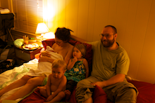
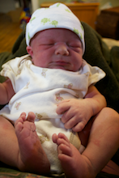

This is a substantially worsened experience. You could try Chrome or Firefox, if you'd like.
41 Weeks and 4 Days
Checkout our awesome I.V. setup!
Nothing happened. Hours passed, and nothing happened. By 8:30 ㏘ the helps’ shift had changed and my sister, Sam, had come over. It was obvious that the castor oil wasn’t working and that I was experiencing no signs of the start of labor. So I called Melicia and told her I’d call her if anything did happen and, after sending Sam home, went to bed, feeling a little like “oh, well. I guess God might want a hospital birth.” To be honest, I felt let down.
Then at 9:30 ㏘, the laxative began to work. I’ll spare you the details but it was by far the worse bowel experience of my life. At around 1:30 ㏂ (while bowel movements were still in full force) my normal contractions changed into much longer ones; a bit more painful, and more in the back, which is where I usually experience almost all of my labor. I waited an hour before calling my midwife because I wanted to be sure. She said she’d head on over. I woke Tim up, he got dressed and we waited.
At 2:40 ㏂ I was sitting on the sofa and told Tim, “oh, my gosh, I can’t believe I just peed in my pants.” But then it happened again and I was like, “wait, this isn’t pee!” You have no idea how happy this made me. It meant that this was probably the real thing, I might not have to have a hospital birth, and maybe I’d see the baby soon. The bowel movements stopped at this point (so thankful!) and started up again after delivery (lasting about 24 hours in total. ugh.).
Tim's first time with Zeal
They got a little more intense and I had Tim put his arms out while I leaned on them and rocked. But labor began to stall. What was maybe a 7/10 on the pain scale slowly diminished as did the frequency of my contractions. I knew I only had so much time to have this home birth and I felt the pressure of every one waiting on me, and I was completely unable to control the situation. I kept praying and telling God that this was up to Him, and I tried not to worry about it.
At about 4:30 ㏂ I asked my midwife to check me, and sure enough I was still 6 ㎝. But she felt that the water sac was still tight around the baby’s head and wanted to try breaking it. I think that the outer sac had broken, but the inner sac (which holds most of the fluid) was still intact. So Helen took a plastic tool with an end that looked like a crochet hook and gently scraped it along the baby’s head. I felt a deep pop on my right side and when Melicia checked me again, some fluid gushed out. And, sure enough, the next contraction was huge.
I headed into the bathroom straight-away because for some reason that’s where I like to be when things are getting rough and labored in there for about 5-10 contractions. I then felt my body begin to push. I came back into the bedroom and asked if I could be checked again. Helen checked me and I was 9 ㎝. dilated. I clung on to our diaper changing table through the next contraction and told Tim to wake up Fiery. During the next contraction I felt all embarrassed because I was sure I was going to poop on the floor. I was like, “I think I’m going to poop.” Melicia chuckled and said, “no, Jess, I think that’s the baby.” I got on the bed and quickly discovered that the bed was going to be way too uncomfortable and called Tim in who was holding a groggy Fiery. My sister came in right after to take Fiery.
The next contraction I immediately squatted, leaning back on our bed (which is on the floor), and uncontrollably pushed. I felt the baby crown and put my hand down to feel it coming out. I tried to stop pushing–I was determined to do this slow to make sure I didn’t tear, but I couldn’t stop pushing. They assured me it was OK and out came the head! They wiggled a shoulder out and I got up a little more on the bed before the next contraction and when it came, pushed the rest of the baby out.
It's a boy!
After I was given a shot of pitocin (the part of my uterus near the cervix wasn’t contracting all the way), Honor joined us and we all crowded around the newest edition. It was so wonderful to have my family there just minutes after birth.
I still cannot believe we had another boy. I thought for sure it was a girl. I was given some newborn boy clothes before he came and remember thinking “what’s the point of going through these?” We named him Zeal Manasseh (I have forgotten all my hardship) and he was born on September 2, 2011 (13 days late) weighing 8 lbs. 8 oz. and 21 inches long. He looks completely different than Fiery and Honor, who looked very much the same when they were born (he might look like me!). He’s nursing fantastically which is such a blessing!
 I am still amazed at the timing of it all. The nurse was able to leave when she needed to (like, within the hour), we got our home birth, and Tim didn’t need to deliver the baby on his own. God was totally in control and I didn’t have to worry at all. Which is amazing, considering everything that happened was contingent on the decision to take the castor oil, when I took the castor oil, when I called the midwife to tell her my contractions had changed, the decision to tell Melicia that the labor had stalled (it’s weird, but I was almost embarrassed to tell her), and the decision to break my water. I will never doubt again! (ha!)